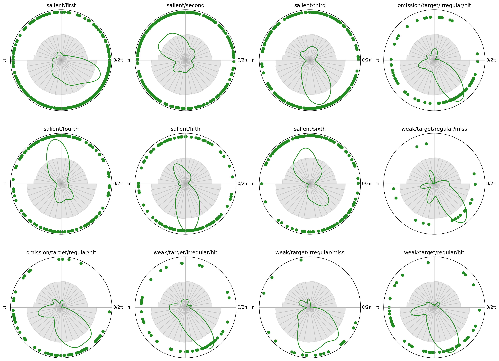

Tutorials#
These tutorials walk you through using Pyriodic for circular data analysis, from getting started to phase diagnostics and circular statistics.



Permutation test against null distribution of respiratory phase angles
This notebook demonstrates how to make a permutation-based test to determine whether events (e.g., target stimuli) tend to occur at a specific phase of the respiratory cycle. As some phase angles are more common than others (exhalation tend to last longer than inspiration), we compare the observed phase angles at stimulus onset to a null distribution derived from the underlying respiratory signal.